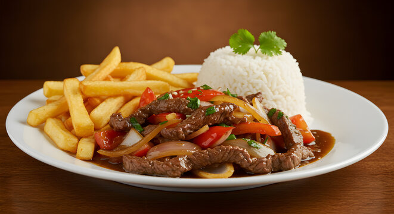

Lomo Saltado
Home

DESCRIPTION
El lomo saltado es un plato emblemático de la gastronomía peruana que fusiona la cocina criolla con la sazón china (chifa). Consiste en jugosos trozos de carne de res salteados a fuego alto en un wok con cebolla morada, tomate, ají amarillo y un toque de sillao (salsa de soya) y vinagre. Se sirve tradicionalmente acompañado de papas fritas y arroz blanco.
INGREDIENTS
Carnes y bases
- Lomo de res (cortado en tiras o cubos medianos; idealmente lomo fino)
- Papas amarillas o blancas (cortadas en bastones para freír)
- Arroz blanco cocido (para acompañar)
Verduras y hiervas
- Cebolla morada (cortada en gajos gruesos o pluma gruesa)
- Tomate (sin pepas, cortado en gajos gruesos).
- Ají amarillo (fresco, despepitado y cortado en tiras delgadas).
- Cilantro o culantro fresco (picado finamente al final).
- Cebollita china / Cebolla de verdeo (opcional, cortada en aliaje para dar un toque oriental extra).
Aderezos
- Sazón y líquidos: Sillao (salsa de soya), vinagre tinto, ajo, sal, pimienta, comino y salsa de ostión (opcional).
- ara cocinar: Aceite vegetal (para freír las papas y saltear) y un chorrito de pisco (opcional, para flambear).
STEPS
- Papas y arroz: Fríe las papas en bastones y ten listo el arroz blanco.
- Carne: Sazona la res (sal, pimienta, comino, ajo) y sellala a fuego muy alto en wok o sartén.
- Verduras y salsa: Agrega cebolla, ají y tomate; vierte sillao, vinagre y saltea rápido para integrar.
- Mezcla final: Espolvorea cilantro, une las papas fritas y sirve de inmediato con el arroz.
otras recetas de la cocina peruana